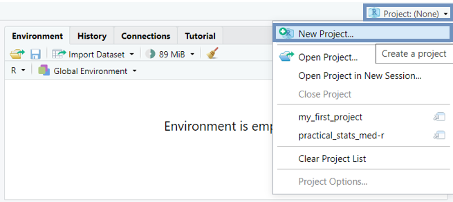
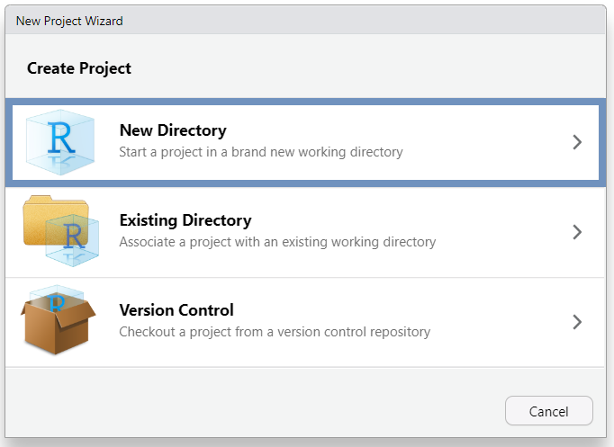
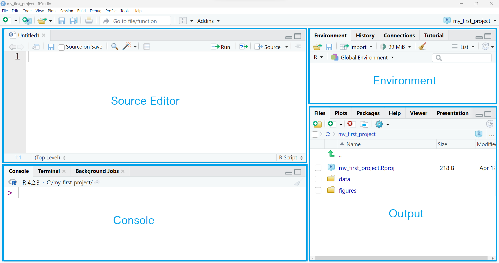

flowchart LR A(File) -.-> B(New Project...)
2 Working with RStudio Projects and writing R scripts
When we have finished this Chapter, we should be able to:
2.1 Working with RStudio Projects
One of the advantages of RStudio IDE is that allows us to work with RStudio Projects. The RStudio Projects are recommended for the following main reasons:
When we are working in R, the program needs to know where to find inputs (e.g. datasets) and deliver outputs (e.g. results, figures), and it will search first in what is called a “working directory”. When the RStudio session is running through the project file (.Rproj), the current working directory points to the project’s root folder.
RStudio Project is a powerful feature that enables to organize all the files and switch between different projects and tasks without getting the datasets, code scripts, or output files all mixed up.
Create an RStudio Project
Let’s create our first RStudio Project to use for the rest of this textbook. From the RStudio menu select (Figure 2.1):
Alternatively, we can use the plus project icon or we can select New Project... from the top right Project menu (Figure 2.2):

Then, we follow the steps in Figure 2.3:

In Step 3 (Figure 2.3 c) the directory name that we type will be the project’s name. We call it whatever we want, for example “my_first_project”.
Once we have completed this process, R session switches to the new RStudio Project with the name “my_first_project” (Figure 2.4):
RStudio Project folder structure
The files in our computer are organised into folders. RStudio Project folder can be viewed or moved around the same way we normally work with files and folders on our computer.
For our purpose, it is sufficient to consider a simple RStudio Project folder that contains the following sub-folders (Figure 2.5):
-
data: we save data files of any kind, such as
.csv,.xlsx,.txt, etc. - figures: we save plots, diagrams, and other graphs
We can create new folders (sub-folders) in the main RStudio Project folder using the (Figure 2.6).
Therefore, we end up to the following RStudio Project folder structure:
NOTE: The file named
my_first_project.Rproj, which has been created by RStudio automatically, contains information of the project and can also be used as a shortcut for opening the project directly from the file system in our computer.2.2 Open a new R script
Usually, we write our code in R script files. An R script (with the .R extension) is simply a text file in which the R code is saved, and then it can be executed on the R console.
Advantages of writing code in a R script file
- We can execute code chunks instead of running one line of code at a time.
- We can save our R script and reuse the code.
- We can document our script including one-line comments that are prefixed with the hashtag symbol, #.
- We can share our script with others.
In the RStudio menu, we go to:
flowchart LR A(File) -.-> B(New File) -.-> C(R Script)

Alternatively, we can use the plus icon from RStudio toolbar or the keyboard shortcut Ctrl+Shift+N for Windows/Linux or Cmd+Shift+N for Mac.
Another pane, the “Source Editor”, is opened on the left above the Console pane (Figure 2.9). In Source Editor, we can write a length script with lots of code chunks and save the file for future use (at present, the new unsaved R script is named “Untitled 1”).

We can change the size of the panes by either clicking the minimize or maximize buttons on the top right of each pane, or by clicking and dragging the middle of the borders of the panes.
The four panes might be placed in a different order that those in Figure 2.9. If we would like, we can change where each pane appears within RStudio under the RStudio preferences. We select from RStudio menu (Figure 2.10):
flowchart LR A(Tools) -.-> B(Global Options) -.-> C(Pane layout)
Now, let’s type 14 + 16 at a new R script in the Source Editor pane and press the button1. The result is printed in the Console (Figure 2.11):
1 In .R script, we can execute our code line by line (by putting the cursor on the line) or selecting a chunk of lines (by highlighting the code) and pressing the run button in the Source Editor. We can also run our selected code using the keywboard shortcut Ctrl+Enter for Windows/Linux or Cmd+Enter for Mac.
Comments can also be used to explain R code, and to make the script more readable. They can also be used to prevent execution when testing alternative code (Figure 2.12).
Comments start with the hashtag symbol #. When executing the R-code, R will ignore anything that starts with #. It is considered good practice to comment our code when working in an .R script.
Keyboard Shortcut for commenting in/out multiple lines at a time:
Ctrl+Shift+C for Windows/Linux
Cmd+Shift+C for Mac
Finally, we can save our R script in the RStudio Project folder. The simplest way is to click on the save icon , give a file name to the script such as “my_script” and then press the “save” button to store it in “my_first_project” folder (Figure 2.13).
Now, the folder structure of our RStudio Project should include the following items (Figure 2.14):
NOTE: The
.Rhistory file contains a history of code that has been executed and has been created automatically by RStudio.
Note that if we close the R script, we can re-open it by clicking on the “my_script” file from the “Files” tab.